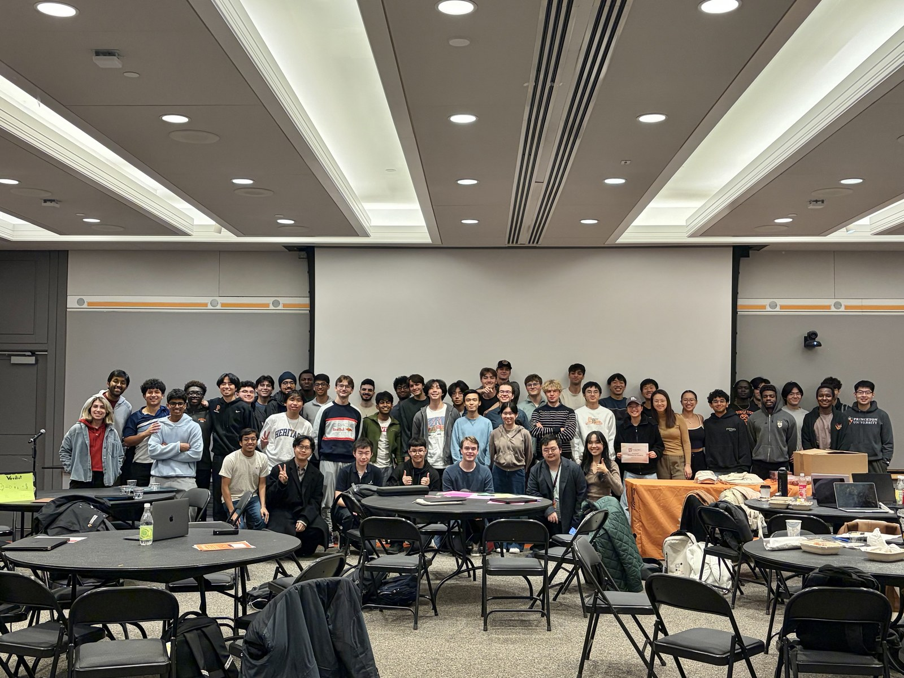

Working with AI like it's a product sprint.
Most people I know open a chat window, type what they want, and hope for the best. I used to do that too, until I realized that working with AI that way is like writing a PRD without user research. You might get something useful, but you got lucky.
The shift happened when I started treating every AI interaction the way I treat a product sprint. Before I type a single word, I define my north star: what does a successful output actually look like? The answer is never "help me write this email." It is "I need a message that gets a professor to respond within 48 hours, sounds like me, and doesn't read like every other student ask they've seen this week."
Define success criteria before you start.
The most expensive mistake you can make with AI is optimizing for the wrong thing. I learned this building a Spotify MCP server, which is a small piece of software that lets a model call a real API instead of guessing at one. I got outputs that looked impressive but were solving a slightly different problem than the one I'd started with. The model will always give you something convincing, which means you need to know what you're looking for before you can evaluate what you got. Now I write a one-sentence acceptance criterion before any non-trivial AI task, phrased as a test I can actually run rather than a description of the finished thing.
What I always verify.
I built a fact-checking protocol into how I work with AI after it confidently told me that Spotify's Audio Features API was active, when it had been deprecated for almost a year. That cost me hours of debugging code that was never going to work. Now three categories get independently verified: anything time-sensitive, anything touching an external API, and anything the model would answer from training data rather than reasoning. The model's confidence has nothing to do with whether it is correct, which is why the rule keys on the category of claim rather than on how sure the answer sounds.
Three skills I reuse.
The systems matter more than any single output. I keep three custom skills. One drafts emails in my voice. One checks that a STAR story, which is the situation-task-action-result format interviewers ask for, matches what actually happened before I use it. The third verifies an API is still live before I build on it. Each exists since I hit that failure mode once and made it hard to repeat.
Evaluate as you go.
I read outputs as they come in, checking each against the north star and flagging anything the model could plausibly have invented. Waiting until the end means rewriting instead of refining, which costs more than the speed was worth.
What AI never decides.
I teach AI literacy to students who'd never opened a terminal. Hallucinations are easy to catch, so they are not what worries me. The failure I actually watch for is quieter. A student keeps an AI-generated structure since it looked organized, or a conclusion since it sounded confident, and never checks it against what they meant to say. Framing the problem and deciding what matters stay with me. Drafting, once the thinking is done, is where AI earns its place.
All of this is a product skill. You are designing a workflow, setting constraints, and iterating on whatever breaks first. The three skills are still in my rotation, and the API check still fires before I build on anything. The students who get the most out of a model are the ones who can say what they are trying to build before they open the window.